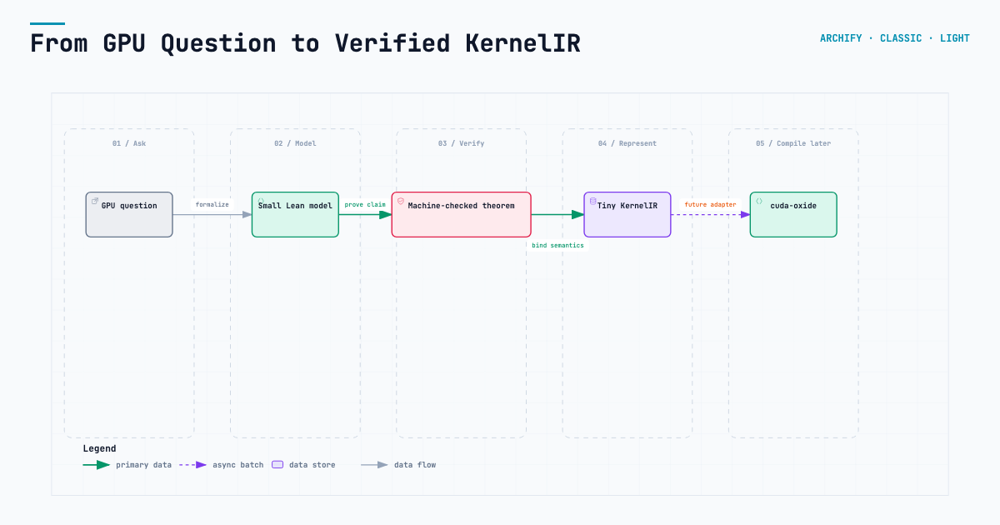
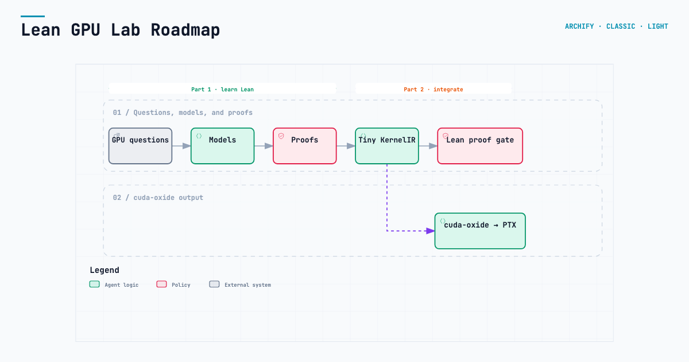
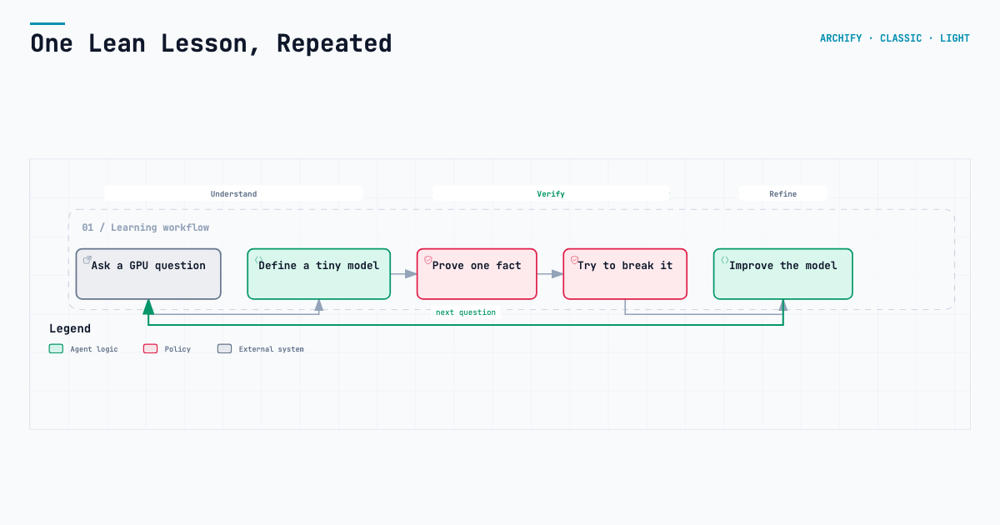
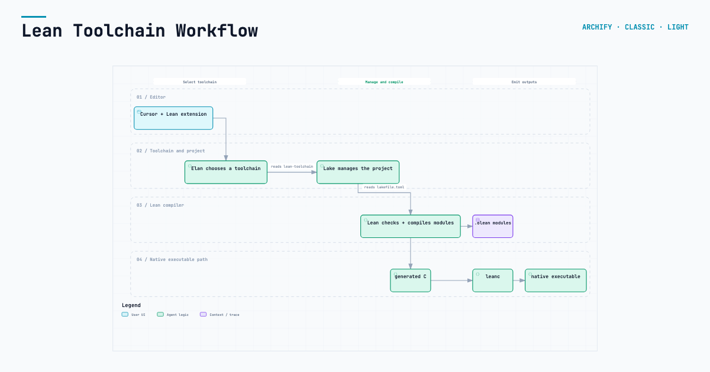
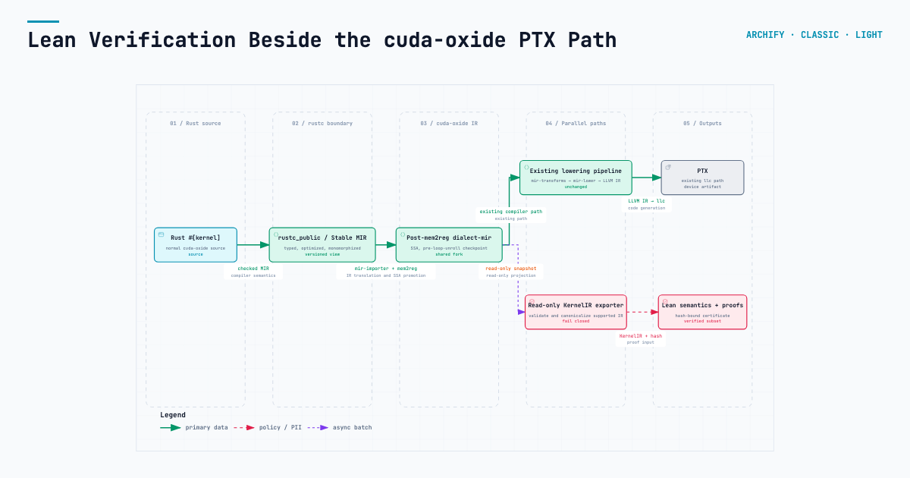
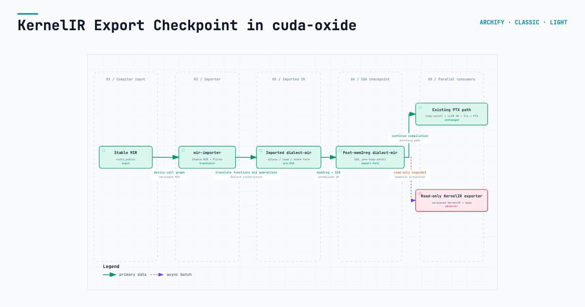

From question to verified KernelIR
Data flow · the whole project in one view
Six interactive Archify views of the learning path and proposed cuda-oxide integration. Select a card to explore it.

Data flow · the whole project in one view

Workflow · learning now, integration later

Workflow · ask, model, prove, break, improve

Workflow · editor through native executable

Data flow · one IR, production and proof paths

Data flow · the proposed post-mem2reg observer